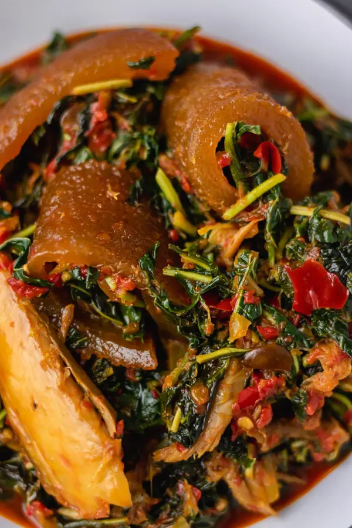

Efo-Riro
The mighty Niherian Efo-Riro

Description
Efo riro (Nigerian Spinach Stew) is a mouthwatering, savory, African stew made with spinach and is oh so flavorful! Who knew spinach could taste so good?
Ingredients
- Spinach
- Meat
- Palm Oil
- Vegetables
- Broth
- Spices
Steps in making Efo-Riro
- Place a pan on medium heat and add palm oil, heat for about 5 minutes but don’t bleach
- Followed by iru woro, chopped onions and fry in the oil for about 2 minutes (In this case I used half of the locust beans and saved the rest to be used before I finished cooking the soup). Add blended pepper to the palm oil and stir to combine, after about 3 minutes, add the remaining locust beans. Move on to add the diced ponmo and ground crayfish and cook for another 3-4 minutes on low heat
- Add seasoning and pinch of salt. (check for salt at the later stage of the cooking)
- Whilst you are waiting for the sauce to cook, boil water enough to cover the vegetable. Once the water is boiled, pour over the vegetable and cover with a lid for 5-10 minutes. Strain and squeeze out excess water from the vegetable.
- Continue to cook the sauce till oil floats on the top, add half of the smoked fish, dried smelt fish and stir to combine. (You can add little water to the sauce if it is too dry but do not overdo it as efo riro is almost water free)
- Add the vegetable to the sauce and stir till all is well incorporated.
- Add the remaining smoked mackerel and carefully combine in the vegetable. Check for salt and cook for another 4 minutes. Take it off the heat and set aside. Serve efo riro soup with a swallow of choice or rice and you can even choose to eat it on its own.

Enjoy your meal.
Home page
previous
Back to top